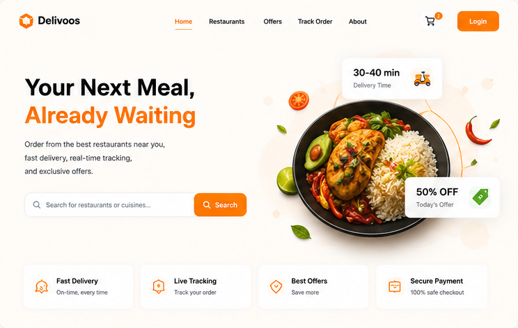
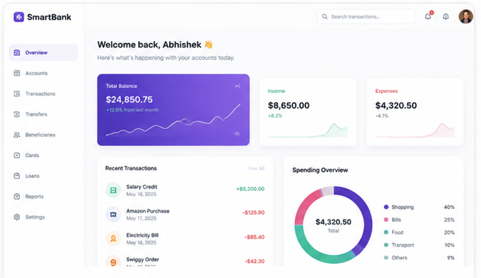

Building scalable, event-driven backend systems and high-throughput Spring Boot microservices with zero-trust API security.
Distributed Saga coordination, transactional endpoints, and high-velocity schema architectures.

Problem: Coordinating asynchronous order placement, courier dispatch, and billing status updates across isolated database schemas without concurrency locks or packet loss under load.
Solution: Orchestrated 8 Spring Boot microservices asynchronously via Apache Kafka. Managed transaction boundaries using Saga design patterns, eliminating standard SQL locks.
Problem: Managing high-velocity balance transfers and deposit operations securely while ensuring transactional consistency under concurrent transfers.
Solution: Developed 30+ REST APIs executing secure transactions. Configured role-based access controls using Spring Security 6 and stateless JWT token exchanges.

Adhering to strict backend engineering cycles from DB normalization to production deployment.
Designing optimal DB schemas (MySQL/Oracle), mapping entities with JPA/Hibernate, and drafting RESTful specs.
Coding scalable microservices, configuring Spring Boot controllers, and establishing async Kafka event pipelines.
Running integration tests, automating assertions via Postman collections, and checking transaction boundaries.
Setting up Redis cache bounds, tweaking logging properties, and preparing print-ready container artifacts.
A categorized snapshot of the verified backend technologies, tools, and frameworks I work with.
Visualizing the asynchronous transaction choreography of Delivoos across Spring Boot microservices.
A verified record of my academic credentials, certifications, and technical milestones.
R B Attal College, Georai — Dr. Babasaheb Ambedkar Marathwada University
Graduated with a final score of 75%, establishing strong core foundations in data structures, SQL databases, and Object-Oriented Programming.
Java Programming Masterclass & SQL Query Optimization
Completed comprehensive training on advanced core Java, multi-threading, database normalization, and query plan indexing optimization sweeps.
Delivoos & SmartBank Project Implementations
Built and integrated event-driven Saga transactional boundaries using Kafka streams and secure endpoints configured via Spring Security 6 and stateless JWT token models.